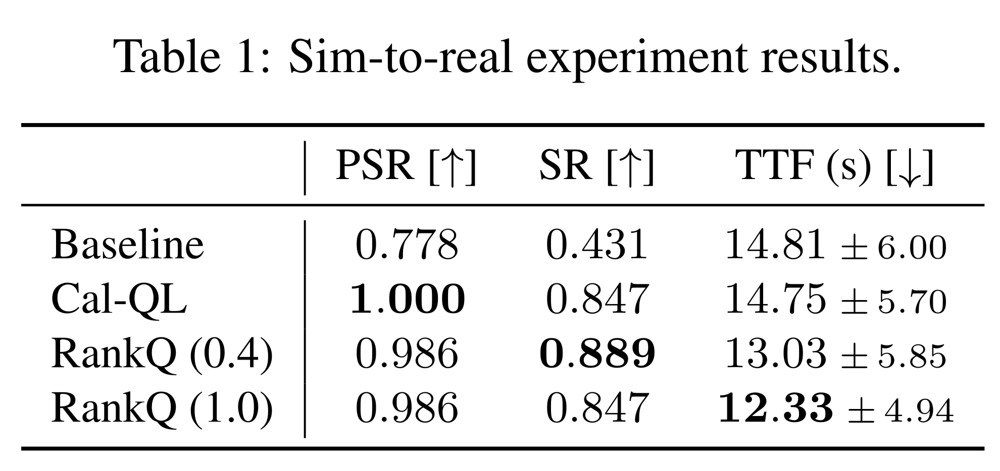

Toy example visualizing the Q-landscape for a fixed state $s$ and 2D action space $(a_0, a_1) \in \mathcal A$ under different critic objectives after offline training. The first row shows the 3D Q-manifold; the second row shows a 2D projection with eight sampled actions and their gradient ascent trajectories; and the third row shows $\partial Q/\partial a$ magnitudes. By explicitly shaping the Q-landscape, RankQ enables the largest number of trajectories to converge toward the optimal action region.
Results Preview
Abstract
Offline-to-online reinforcement learning (RL) improves sample efficiency by leveraging pre-collected datasets prior to online interaction. A key challenge, however, is learning an accurate critic in large state–action spaces with limited dataset coverage. To mitigate harmful updates from value overestimation, prior methods impose pessimism by down-weighting out-of-distribution (OOD) actions relative to dataset actions. While effective, this essentially acts as a behavior cloning anchor and can hinder downstream online policy improvement when dataset actions are suboptimal. We propose RankQ, an offline-to-online Q-learning objective that augments temporal-difference learning with a self-supervised multi-term ranking loss to enforce structured action ordering. By learning relative action preferences rather than uniformly penalizing unseen actions, RankQ shapes the Q-function such that action gradients are directed toward higher-quality behaviors. Across sparse-reward D4RL benchmarks, RankQ achieves competitive overall performance against seven baselines. In vision-based robot learning, RankQ enables effective offline-to-online fine-tuning of a pretrained vision-language-action (VLA) model in a low-data regime, achieving an average simulation success rate 38.2 percentage points higher than the next best method. In a high-data setting, RankQ improves simulation performance by 13.7 percentage points over the next best method and demonstrates sim-to-real transfer, increasing real-world cube stacking success from 43.1% to 88.9% relative to the VLA’s initial performance.
Methodology
Rather than treating all OOD actions as equally inferior, RankQ enforces structured action ordering in a way that shapes the Q-landscape to point toward optimal actions. We partition the dataset $\mathcal D$ into two unique subsets containing exclusively success and failure trajectories, denoted by $\mathcal D_{\text{success}}$ and $\mathcal D_{\text{failure}}$. For transitions $(s,a) \sim \mathcal D_{\text{success}}$, we construct several classes of self-supervised suboptimal actions that capture different types of deviations from optimal behavior:
- Noisy actions: $a_\epsilon = a + \epsilon$, where $\epsilon \sim \mathcal N(0, \sigma^2)$, representing actions with small perturbations.
- Very noisy actions: $a_{2\epsilon} = a + 2\epsilon$, representing actions with larger perturbations.
- Random actions: $a_r \sim \mathcal U(-1,1)^{|a|}$, representing arbitrary actions.
- Permuted actions: $a_p \sim \mathcal D$, representing actions sampled from unrelated states.
These constructions allow us to impose structured ordering constraints. First, we enforce that successful actions are preferred over all suboptimal variants:
Enforcing only this success-ranking constraint would essentially produce a Q-landscape with a gradient field similar to CQL and Cal-QL. Rather than stopping here, we also enforce ordering among suboptimal actions by using action-space proximity to successful actions as a heuristic for relative quality:
Finally, we incorporate failure trajectories to provide additional supervision in low-quality regions of the state space. We enforce that a failure dataset action is still preferable to random actions:
but refrain from imposing stronger ordering constraints due to the absence of a meaningful notion of relative quality. The full multi-term pairwise ranking loss is formulated in the paper.
Pseudocode
import torch
import torch.nn.functional as F
def compute_rankq_loss(critic: torch.nn.Module, state: torch.Tensor,
rollout_action: torch.Tensor, success_mask: torch.Tensor,
noise_scale: float = 0.15, alpha_0: float = 1.0, alpha_1: float = 1.0):
bs = rollout_action.shape[0]
success_indices = torch.where(success_mask)[0]
failure_indices = torch.where(~success_mask)[0]
eps = torch.randn_like(rollout_action)
perm_indices = torch.roll(torch.arange(bs), shifts=-1)
# Define all types of actions
all_actions = {
"rollout": rollout_action,
"noisy": rollout_action + eps * noise_scale,
"very_noisy": rollout_action + eps * 2 * noise_scale,
"permuted": rollout_action[perm_indices],
"random": torch.rand_like(rollout_action) * 2 - 1,
}
# Compute Q-values for all actions
q_values = {
name: critic(state, action)
for name, action in all_actions.items()
}
pairs = [
# L^fail
("rollout", "random"),
# L^succ
("rollout", "noisy"), ("rollout", "very_noisy"),
("rollout", "permuted"), ("rollout", "random"),
# L^chain
("noisy", "very_noisy"), ("very_noisy", "random")
]
rankq_loss = torch.zeros(bs)
for i, (pos_type, neg_type) in enumerate(pairs):
ind = failure_indices if i == 0 else success_indices
alpha = alpha_1 if i == 0 else alpha_0
q_pos = q_values[pos_type][ind]
q_neg = q_values[neg_type][ind]
rankq_loss[ind] += alpha * F.softplus(q_neg - q_pos)
return rankq_loss.mean()VLA RL Fine-tuning in Low-data Regime

Low-data VLA RL fine-tuning results across 3 random seeds. Curves start after offline RL has concluded.
To simulate a pseudo real-data bottleneck, we define a challenging low-data regime as using 200 VLA self-rollouts as the offline dataset together with only 8 online rollouts per update. Using this limited data budget, RankQ is the only algorithm that consistently and significantly improves the VLA beyond its baseline performance. Note that since cube stacking and spoon-into-bowl have only about a 20% initial success rate, roughly 80% of the offline dataset consists of failure trajectories. RankQ has on average 38.2% higher success rate compared to the next best non-RankQ method.
VLA RL Fine-tuning in High-data Regime

High-data VLA RL fine-tuning results across 3 random seeds. Curves start after offline RL has concluded.
We define a high-data regime as using 800 VLA self-rollouts as the offline dataset together with 192 online rollouts per update. WIth an initial VLA success rate of about 8%, only about 64 successful trajectories exist in the offline dataset. Extensive domain randomization is used for this environment to enable sim-to-real transfer. RankQ has a 13.7% higher success rate and 25.7% faster task completion speed compared to the next best method.
Sim-to-Real Results
We zero-shot transfer two RankQ checkpoints trained in the high-data regime in the real world and compare their performance against the initial VLA and Cal-QL over 288 real-world experiments. With just 40% of the online training required by Cal-QL, RankQ (0.4) achieves comparative performance while increasing cube stacking success from 43.1% to 88.9% relative to the initial VLA. Reasons for RankQ (1.0)'s lower performance are described in the paper.

Exp. 37. The initial VLA misses the grasp on the green cube and then hovers in confusion. RankQ grasps and stacks the cubes in one attempt.
Exp. 50. The initial VLA fails its first grasp attempt and afterward attempts to stack the green cube but ends up pushing the yellow cube out-of-reach. RankQ grasps and stacks the cubes in one attempt.
Exp. 8. The initial VLA repeatedly misses the grasp on the green cube. It eventually succeeds but then times out before stacking. RankQ grasps and stacks the cubes in one attempt.
Exp. 22. The initial VLA fails its initial grasp and its initial stack attempt. It then gets stuck trying to regrasp. RankQ also fails the initial stack but quickly reattempts the task, succeeding before timeout.
Citation
If our work has proved useful, please consider citing our work:@misc{choi2026rankqofflinetoonlinereinforcementlearning,
title={RankQ: Offline-to-Online Reinforcement Learning via Self-Supervised Action Ranking},
author={Andrew Choi and Wei Xu},
year={2026},
eprint={2605.11151},
archivePrefix={arXiv},
primaryClass={cs.AI},
url={https://arxiv.org/abs/2605.11151},
}